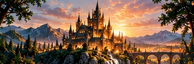
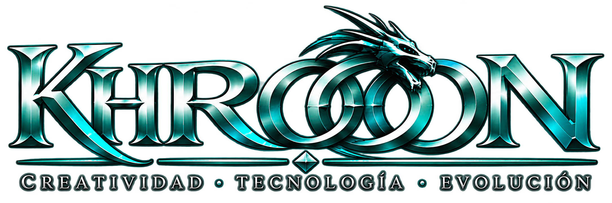
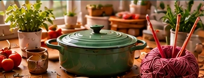
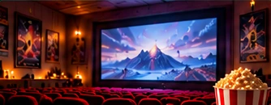
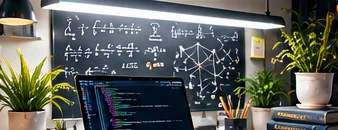

En desarrollo
Khrooon 2.0
Una nueva etapa para los mundos interactivos de texto, accesibles desde navegadores modernos.
Más información
De los mundos de aventuras de texto a las ideas digitales de hoy. Un espacio para imaginar, experimentar y crear.
EXPLORA
Ideas en distintas etapas, un mismo espíritu: imaginar, desarrollar y evolucionar.

Una nueva etapa para los mundos interactivos de texto, accesibles desde navegadores modernos.
Más información
Un lugar para conservar recetas, labores, recuerdos y conocimientos que merecen perdurar.
Explorar en GitHub
Cartelera, críticas, recomendaciones y favoritos para quienes disfrutan del séptimo arte.
Más información
Nuevas ideas, aplicaciones y experimentos seguirán encontrando su lugar aquí.
NUESTRA HISTORIA
Antes de las interfaces visuales, una pantalla de texto podía convertirse en un universo entero.
Khrooon nació de la fascinación por la informática, los mundos virtuales y las posibilidades de crear experiencias interactivas mediante la tecnología.
Sus orígenes se encuentran en la época de los MUD (Multi-User Dungeons), universos compartidos donde las palabras, la imaginación y la programación permitían construir mundos y vivir aventuras.
Con el paso del tiempo, aquella inquietud por experimentar y crear evolucionó hacia nuevos ámbitos: aplicaciones, herramientas digitales y proyectos web.
Hoy, Khrooon recupera ese espíritu original como punto de encuentro para iniciativas independientes que comparten una misma filosofía: aprender, imaginar, desarrollar y evolucionar.
Un mundo compartido construido con texto, decisiones e imaginación.
Experimentar con sistemas, programación y experiencias interactivas.
Las ideas evolucionan hacia herramientas, aplicaciones y páginas web.
Una identidad común para proyectos independientes, presentes y futuros.
LO QUE NOS MUEVE
Soluciones y experiencias digitales pensadas para cada idea, desde el prototipo hasta la web.
Sitios adaptados a ordenador, tablet y móvil.
Herramientas que resuelven necesidades reales.
Historias y experiencias donde participar.
Procesos más claros y tareas más sencillas.
Prototipos, pruebas y aprendizaje continuo.
SIGUIENTE CAPÍTULO
Khrooon sigue creciendo. Descubre los proyectos y acompaña su evolución.
Visitar GitHub ↗Por ahora puedes seguir la evolución de los proyectos en GitHub.